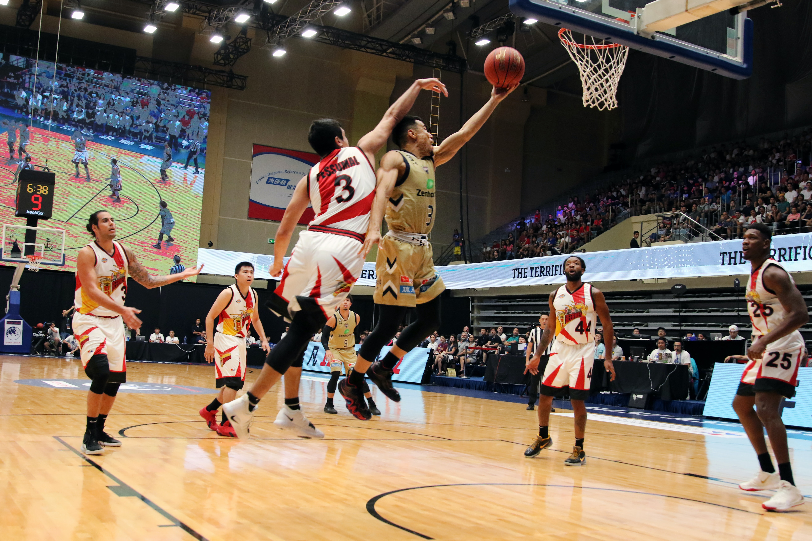
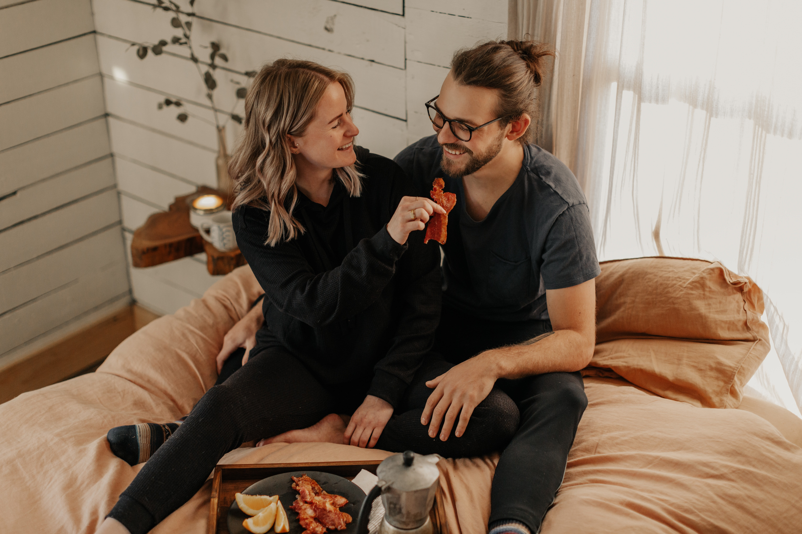

주소진(14학번, 화석)은 감사하게도 동생들에게 꽤나 인기가 많았다고 한다
그녀는 이번 4-2학기 고토(고전읽기와 토론, 1학년 필수교양)수업에서
한 음대아기에게 "어, 20학번 아니었어요? 0o0??"라는 말을 듣고 마음이 설렜다
(아 복학생들한테 함부로 칭찬하면 큰일나는 이유가 이거구나)
주소진은 14학번시절 친구의 손에 이끌려 자연대 농구부 덩커의 매니저(밥을 얻어먹는 존재)가 된 적이 있다
에이스(경영학과), 피플(체교과) 선수들이 참 멋져보였다

재밌었다
코로나전에 세계일주를 다녀올 수 있었던건 큰 행운이 아니었나....
더이상 적기 귀찮지만 대충 열심히 살았고 좋은 사람 많이 만났고 감사한일들이 많았다
학교에 오래 있는 덕에 시스템옴므 코트가 잘 어울리는 윤승현(건축공학과,-1살연하)도 만날 수 있었다

열정많고 욕심많은 윤승현(졸업까지1년반남음)을 post주소진으로 키우겠다(대충 공모전 싹쓸이 시키겠다는 뜻)